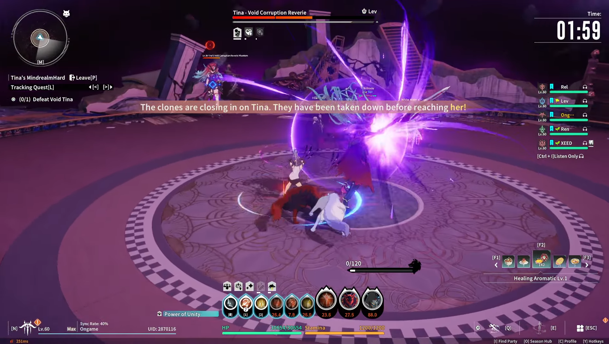
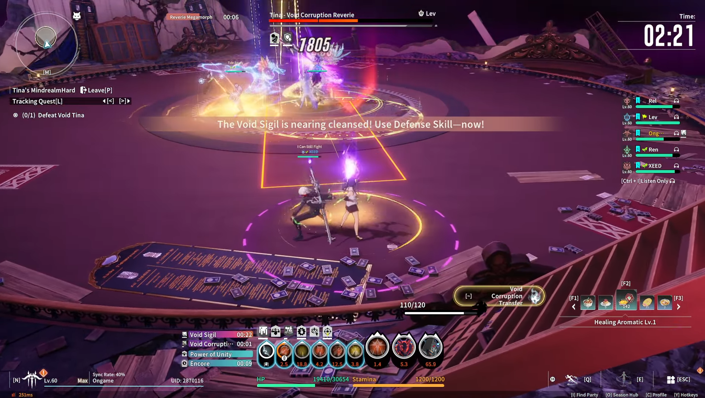
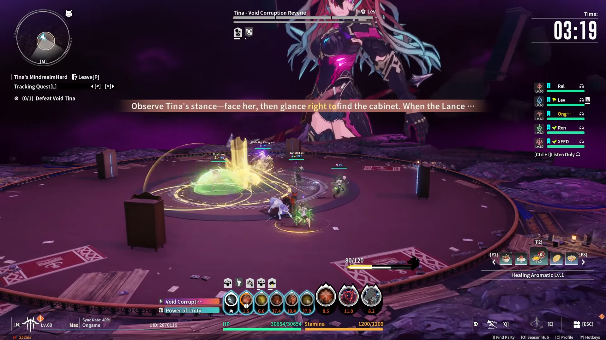

Tina's Madness - Guide Complet
Introduction
👋 Salut la guilde !
Avec ce 4ème jour tout le monde devrait (potentiellement) avoir accès au donjon Tina's Madness en Hard ! (5970 de Ability Score)
Pour vous aidez à le compléter je vais passer en review les mécaniques principales du BOSS pour votre First time !
1ÈRE PARTIE : Les trash mobs
À savoir, vous pouvez mourir autant de fois que vous voulez sur cette part, juste n'en abusez pas hein soyez sérieux et utile.
Votre rôle pour les ShieldKnight et HeavyGuardian
Gather le plus de mob, utilisez vos spell défensif comme ils peuvent faire très mal surtout avec du low Ability Score / Gear
Votre rôle pour les BeatPerformer et VerdantOracle
Utilisez vos spell de défense et toujours regarder la vie de la party pour être sûr de ne pas whipe !
Votre rôle pour les Marksman, FrostMage, Stormblade et WindKnight
TAPEZ, en gardant votre rotation de spell clean.
De manière générale on est à un stade où vous ne pouvez PLUS en tant que DPS / Tank / Heal juste AFK sans dodge les attaques (Horrible pour le Heal)
ESQUIVEZ LES AOE le plus possible.
Vous pouvez être target par un zone en rouge qui vous suit ! Dans ce cas juste dodgez un maximum après 2.5 secondes (et vous mettez pas sur vos alliés)
2ÈME PARTIE : LE BOSS
La partie la plus redoutée qui a déjà dû en tuer plus d'un ici !
Les 3 mécaniques principales sont celle-ci :
PATATE CHAUDE
La mécanique est très simple :
- Une personne du groupe va avoir un cercle en dessous d'elle qui ONE SHOT au bout ~ 20 secondes.
- Le timer peut être RESET en passant ce cercle à une autre personne du groupe ! (Touche ²)
IL FAUT ABSOLUMENT DONNER LE VOID SIGIL AU TANK SINON VOUS ALLEZ TOUS WIPE

LES CLONES
Au bout d'un moment 3 clones vont Spawn et ce dirigez au centre, si un atteint le centre c'est game over gg.
À savoir que les 3 clones ne se déplacent pas à la même vitesse, donc priorisez celui qui se déplace le plus vite vers Tina
VOID SIGIL
La personne avec le void sigil (patate) va recevoir au bout d'un moment une attaque qui one shot et ne peut PAS BOUGER.
C'est pour CA QU'IL FAUT DONNER AU TANK POUR QU'IL PUISSE TANK.
La mécanique est en premier pour les healer de donner des boost / shield.
Le spell est ESQUIVABLE au DERNIER MOMENT.
2ème partie du boss
Dans cette partie Tina devient géante et ne peut pas être attaquée.
La mécanique est simple, elle va attaquer d'un côté de la map, le but c'est de RUSH de l'autre côté sans se faire toucher par l'attaque qui ONE SHOT
Cliquez sur F sur le Closet (Placard) à l'extrémité de l'attaque (de l'autre côté en gros).
Et c'est GG ! Bon Boss à tous et à toutes !
TL;DR
- Cercle violet en bas, donnez à une autre personne (LE TANK) en cliquant sur (²)
- Tuez les clones en commençant par celui qui marche en premier
- Dodgez le spell qui vous empêche de marcher au dernier moment
- Allez à l'opposé de l'attaque de Tina et cliquez sur le Closet (F)